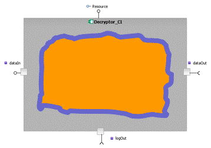
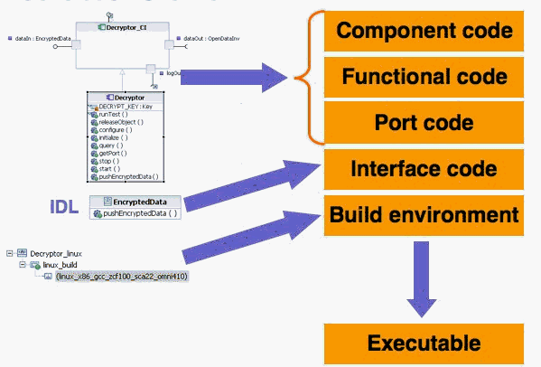

This section describes the completely customizable, out-of-the-box Spectra CX Code Generator and build environment and how SCA code generation works within CX.
The complete code base for an SCA-compliant component comprises two major parts:
the SCA component code and the functional code. The component
code manages all the SCA artifacts, ports, and properties through the CF::Resource interface. The functional code
contains the signal processing and control behaviour for a component.
The complete code base for an SCA-compliant component comprises two major parts:
the SCA component code and the functional code. The component
code manages all the SCA artifacts, ports, and properties through the device interfaces: CF::Device, CF::LoadableDevice,
CF::ExecutableDevice, and CF::AggregateDevice. The functional code
contains the signal processing and control behaviour for a device.
As shown in Figure 1, the SCA component and device code is the outer shell of a component or device. It manages any CORBA calls that come in. It performs as much processing as necessary and passes call to the functional code when needed.
The functional code is non-CORBA code.

Code generation, as described in this document, means generation of the SCA component and device code, as well as the makefiles required to build this code. The functional code can be implemented in a separate workflow within Rational Software Modeler. The component and device code forwards calls to the functional code for handling where needed.

This diagram provides another view of the code generation process.